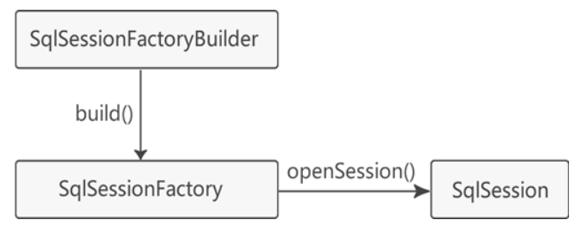

记录一下MyBatis的理解
之前没学过MyBatis，只看过狂神说的教程，虽然能跟着视频敲一个MyBatis的程序出来，但是对具体的步骤还是很困惑，来梳理一下。只是梳理过程，不涉及细节，例如settings等设置
创建MyBatis的步骤
下载并部署jar包，这个在maven中实现
编写MyBatis核心配置文件：mybatis-config.xml
创建实体类：POJO (对象的属性字段（一般是private）以及getter、setter、toString基本方法)
创建DAO接口：自己想要实现的方法，进行定义，不需要实现
- public User selectUser(int userID);
- public void insertUser(User user);
创建SQL映射文件：mapper.xml，实现的是DAO中的接口方法
1
2
3<select id="selectUser" resultType="User">
select * from UserSQL where UserID = #{userID}
</select>创建测试类：
SqlSessionFactoryBuilder...
MyBatis三个基本元素：
- 核心接口和类
- MyBatis核心配置文件 (mybatis-config.xml)
- SQL映射文件 (mapper.xml)
核心配置文件:
1 | <?xml version="1.0" encoding="utf-8"?> |
SQL映射文件mapper.xml需要放入mybatis-config.xml中的<mapper />里面，如果有多个mapper.xml就全部放入。如果一个接口对应多个映射文件，则需要有各自的命名空间namespace.
读入核心配置文件

SqlSessionFactoryBuilder 读入核心配置文件mybatis-config.xml，再通过build函数创建SqlSessionFactory（相当于线程池），SqlSessionFactory创建SqlSession实例（此步相当于线程池创建线程），因为mybatis-config.xml中包括mapper.xml，所以现在可以拿到对数据库的操作指令。
SQL映射文件：mapper.xml
mapper.xml文件通过命令<mapper namespace="类的路径">，读入要实现的接口（接口已经import POJO 类，且接口名一般为：POJO类名+Mapper，例如UserMapper，与之对应的SQL映射文件名称为：UserMapper.xml），接口中对应方法定义（比如说对数据库进行的操作），mapper.xml通过一些特定的命令（select、delete等），这就与接口对应起来，其实可以将mapper.xml看作一个特别的类，并且此类 implement 该接口。
测试：
由上面可以得知，通过SqlSessionFactoryBuilder 一系列的操作，我们将mybatis-config.xml，mapper.xml，接口、POJO类都链接起来了。
之后我们要进行操作的时候，也就是在测试类中，通过反射拿到接口的类，UserMapper.class，然后对该类中的函数进行调用，就是直接转到SQL映射文件UserMapper.xml寻找对应操作。
将SqlSession实例commit()并close()
注解
使用注解的方式实现mapper.xml尽管可以减少一些操作，但是并不建议，因为有动态SQL以及复杂的表的使用，不利于维护。
xml文件会覆盖掉共存的注解